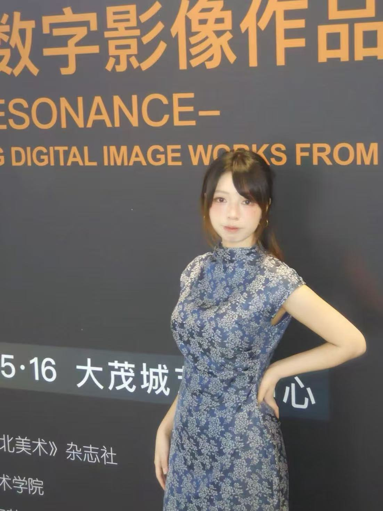
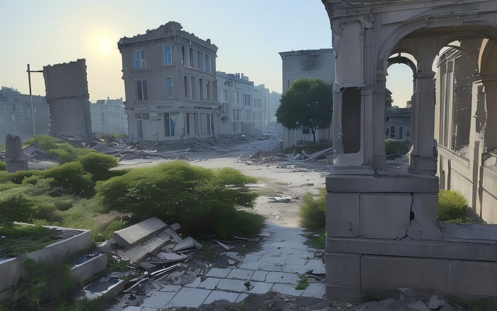
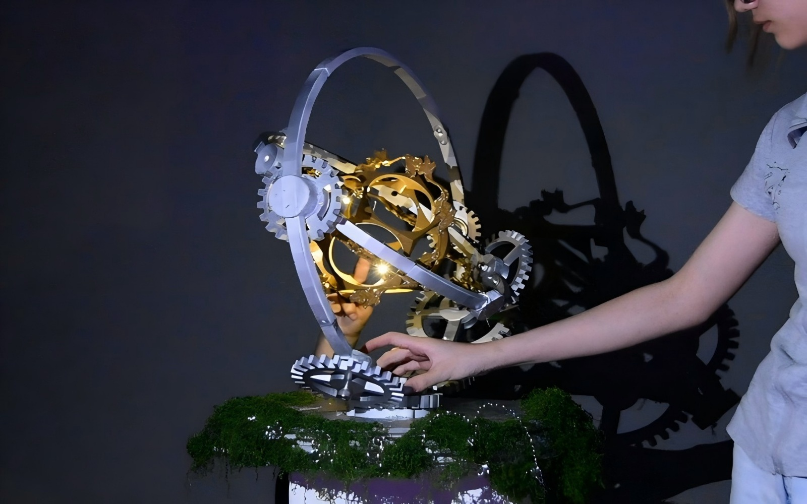
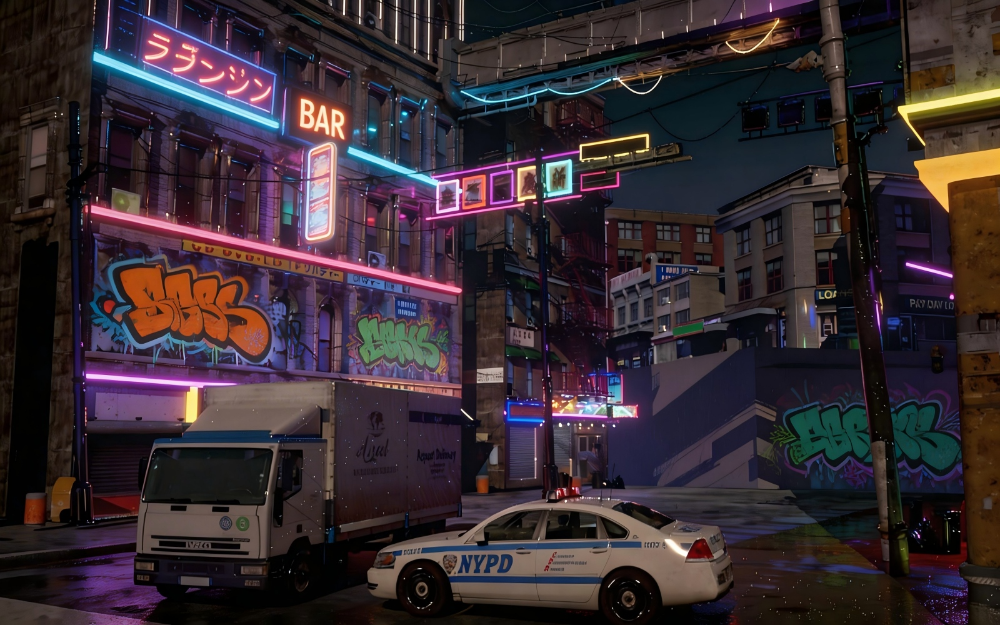
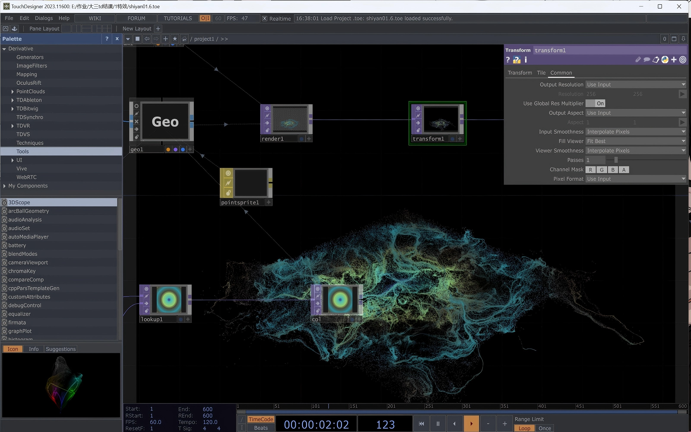

设计的力量就是让人觉醒的力量 —— 原研哉

以非人视角记录核灾后人类消亡、自然重新吞噬城市为主题的影像创作。深度结合Stable Diffusion与Runway工作流进行视觉实验。
获国家级奖项两项，入选陕西高校优秀数字影像作品展。
聚焦辛口村，以“空间改造+体验设计+数字引流”模式助力乡村振兴。负责定制开发IP形象及AR交互地图方案。
获苏陕协作专项资金，有效赋能区域合作与品牌引流。
原创教育科技IP设计，以变色龙“满满”为主角。负责全链路IP构思、AI动画视频脚本撰写及视觉表现制作。
成功构建游戏化学习闭环，为企业培训提供有温度的视觉体验。



